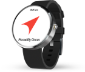

Compass Navigation
for Android Wear
A simple and beautiful compass navigation app for your Android Wear smartwatch.
Just enter an address or coordinates on your phone. Then use your watch to navigate. A compass points to your destination.